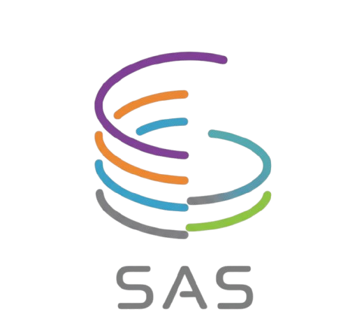

drop your map here
Drag and drop a .pgm and a .yaml file anywhere
on the canvas, or use the panel on the left.

Drag and drop a .pgm and a .yaml file anywhere
on the canvas, or use the panel on the left.
A lightweight, dependency-free editor for editing ROS occupancy grid maps directly in the browser. Built for Nav2-based navigation pipelines that occasionally need a clean way to fix a noisy SLAM output, add a missing wall, mark a keep-out zone, or set a meaningful world origin, without leaving the browser and without committing irreversible changes to a raster file.
Every drawing operation is a non-destructive vector object. Walls, erasures, un-scanned regions and keep-out zones are all editable shapes that stay editable until you explicitly flatten them or export. Lines, rectangles, polygons, circles, arcs and bezier curves can be moved, resized, duplicated or deleted at any point in the workflow. The original PGM is touched only on export.
Everything runs locally in the browser. The editor parses .pgm map images and
.yaml map metadata natively, respecting the standard ROS conventions (resolution,
origin, bottom-left image anchoring). Exports include the edited .pgm and
.yaml, plus an optional _keepout pair compatible with the Nav2 keep-out
filter, ready to drop into a launch file.
Every wall, erase or keep-out is a vector object, fully editable until you flatten or download.
Brush, line, polyline, rect, rotated rect, polygon, circle, ellipse, arc, bezier.
Place world (0,0) anywhere on the map, by click, drag, pixel input, or raw YAML coordinates.
Save your editing session as .sasmap.json and resume later with shapes intact.
A second raster channel for the Nav2 keep-out filter, exported only when needed.
Metric snapping, live distance measurement in meters, fifty step undo history.
This editor is a tool built in support of the Semantic Autonomy Stack (SAS), a layered architecture for mobile robot autonomy that combines geometric navigation with semantic memory and language-based reasoning. SAS is the subject of two open-access publications: